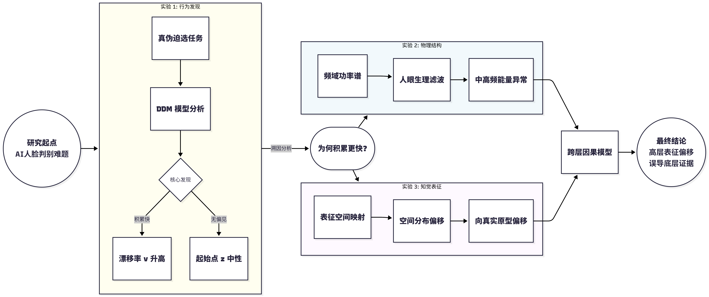
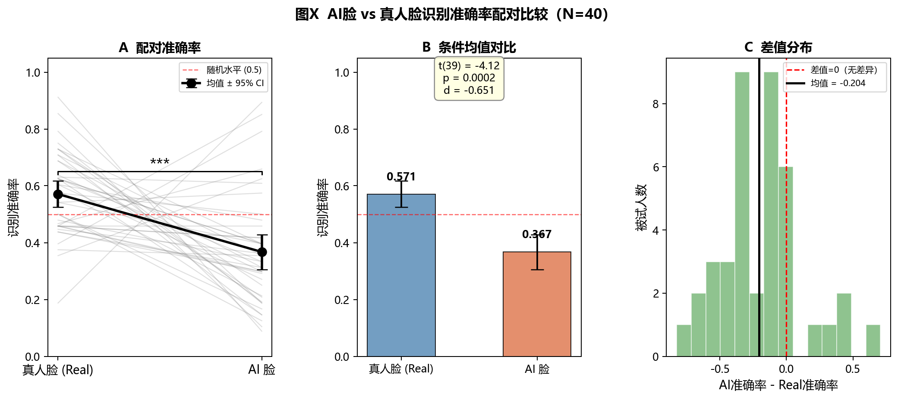
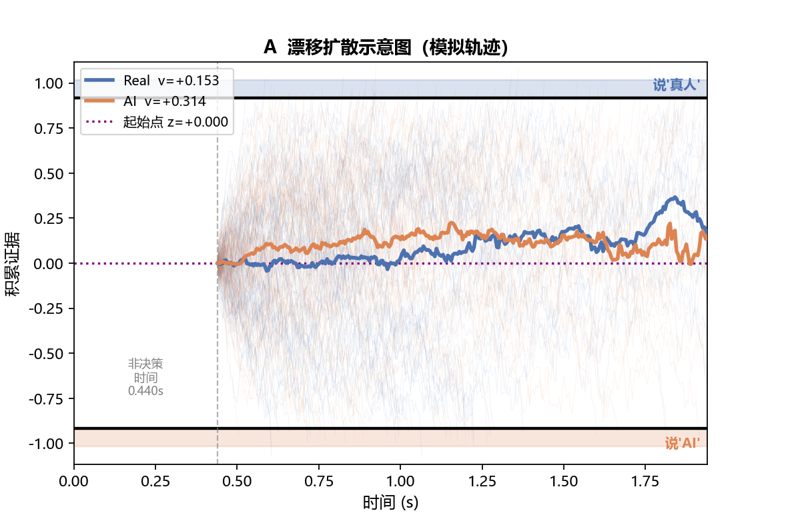
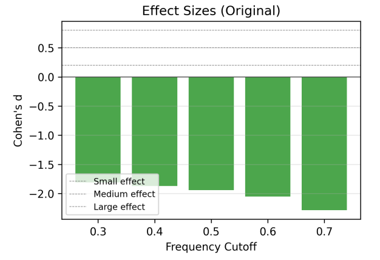
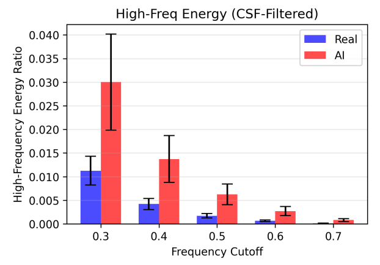
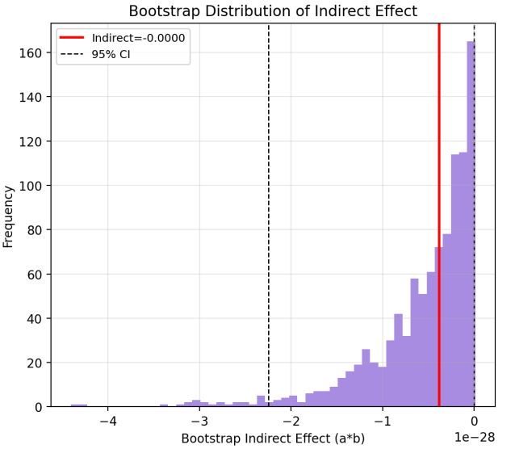

研究问题与框架
研究问题
高保真生成模型使人脸图像在统计结构上逼近甚至超过自然分布的典型性，由此引出一个关键问题：人类视觉系统在当前条件下是否仍具备稳定的真伪判别能力，以及误判是否具有系统性偏向。
进一步的问题在于，这种偏差究竟源于决策层的主观偏置，还是源于视觉加工机制本身的结构性限制。
整体研究框架
本研究构建从物理特征到认知决策的三层解释路径：图像频域结构 → 视觉表征空间 → 行为决策输出。
三项实验分别对应不同层级：
- 实验1刻画行为表现与决策动力学
- 实验2检验图像层面的统计差异
- 实验3建立跨层因果链路

该框架的目标在于，将判别失败从表层现象还原为可计算的机制过程。
实验1：行为判别结果
在2AFC任务中，被试对真实人脸与AI人脸进行分类判断。计算每名被试在 AI 条件与 Real 条件下的识别准确率，并采用配对样本 t 检验（paired-samples t-test）直接比较两条件间的差异。

图注：AI 生成人脸与真实人脸识别准确率的配对比较（N = 40）。A：个体配对折线图，黑线为均值±95% CI；B：条件均值柱状图；C：被试差值（AI准确率 − Real准确率）的分布。红虚线表示随机水平（0.5）或差值为零。p < .001。
结果表明，真实条件下识别准确率显著高于AI条件（0.571 vs 0.367），配对样本t检验显示差异显著（t(39) = -4.118, p < .001, d=-0.651）。
同时，辨别力指数为负（d' = -0.17），说明被试整体判断方向发生反转，人类并非仅在难度上受限，而是在判别方向上出现系统性偏差。
实验1：决策动力学机制
在漂移扩散模型框架下，对决策过程进行参数分解。结果显示，AI人脸对应更高的漂移率（v = 0.3134），而真实人脸较低（v = 0.1528）；起始点接近中性水平，未观察到稳定偏置。



模型比较表明，漂移率差异模型优于偏置模型。
误判来源于证据积累过程本身，而非先验倾向；AI人脸在感知层面提供了更强的判定证据，从而驱动决策过程偏离真实边界。
实验2：频域统计结构
设计
在真实与AI人脸之间比较空间频率分布差异，并引入视觉滤波模拟检验其可感知性。
方法
对图像执行傅里叶变换，提取功率谱密度函数以刻画频率—能量分布关系；进一步引入对比敏感度函数对频谱进行加权，以模拟人类视觉系统的频率响应特性。
指标
比较不同频段能量分布及其效应量变化。
结果



结果表明，AI人脸在中高频范围内存在显著能量增益，效应量达到大效应水平（|d| > 1.5）。
实验2：CSF滤波结果



在引入视觉对比敏感度函数进行加权后，差异进一步放大（|d| ≈ 3.0）。

该结果说明，生成图像在物理层面存在稳定的统计异常，但该异常未能被人类行为表现有效利用。
实验3：跨层计算建模
设计
构建从频域特征到知觉决策的跨层模型，检验物理信息是否通过表征层影响判断结果。
方法
提取图像多频段特征作为输入变量，并利用视觉模型获得高维表征向量，以原型距离刻画表征偏移；在此基础上建立回归模型，并通过Bootstrap检验中介路径。
指标
频域特征、表征偏移与决策结果之间的路径关系及其显著性。
结果


在表征层，利用视觉模型提取高维嵌入，并以真实人脸均值构建原型参照；结果显示，AI人脸在表征空间中系统性向真实原型靠近。
实验3：中介分析结果

说明：图中各项路径系数（Path a, b, c, c'）及最终的间接效应在四舍五入至万分位后均呈现为 0.0000，这是由自变量与因变量之间的量纲差异极大所致。尽管效应绝对值微小，但由于其 95% 置信区间（CI）完全落于负数区间且未跨越 0 点，因此在统计学上判定为显著。

在决策层，表征位置与判别结果显著相关（r = -0.307, p < .001）。中介分析表明，频域特征通过表征偏移间接影响决策输出，路径效应在Bootstrap检验中稳定存在。
该结果表明，底层统计异常并未被忽略，而是通过表征重构参与了决策形成。
总结
本研究从行为决策、视觉滤波到深层表征，系统揭示了人类难以分辨高保真AI生成人脸的机制原因。
实验一
被试对AI人脸的准确率显著低于真实人脸，且决策起点无偏，误判源于AI人脸自身特征驱动了证据积累速度更快，而非主观偏见。
实验二
AI人脸在中高频段存在显著能量堆积，且人眼对比敏感度函数会将这一物理差异放大至效应量3.0，说明物理异常位于人眼敏感频段但未被有效利用。
实验三
构建跨层中介模型，发现频域异常通过改变高维表征向真实人脸原型偏移，进而影响知觉判断，形成完整因果链条。
三项实验整合计算建模与视觉模拟，证明判别线索完整保留于视觉表征中，但人类被表征层面的伪装误导而忽略底层统计证据，为理解人机交互中的感知局限提供了新依据。